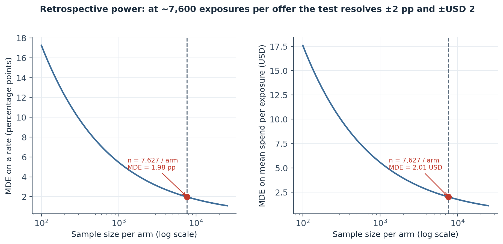
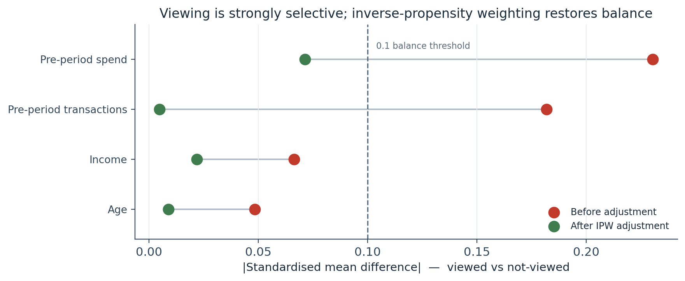
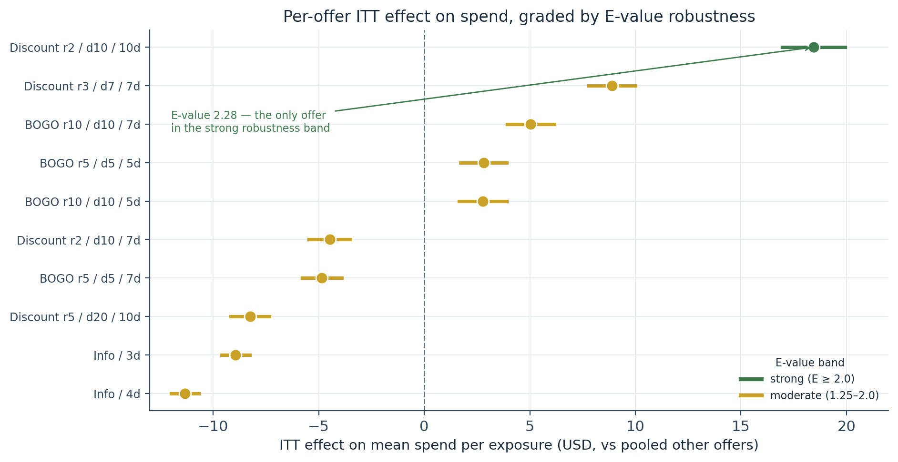
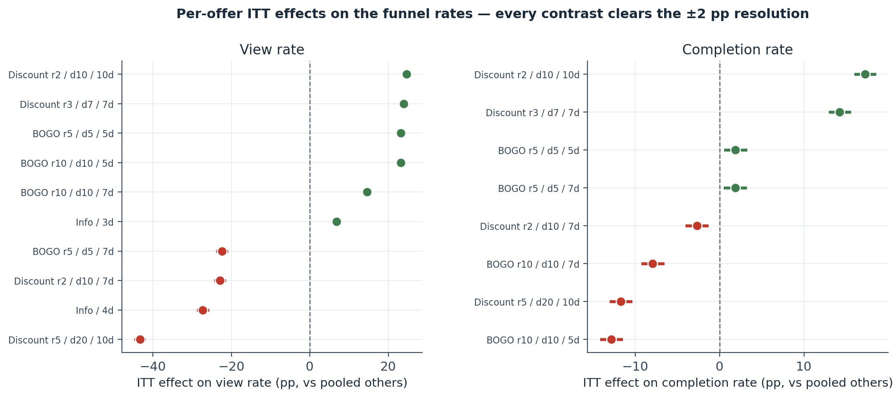
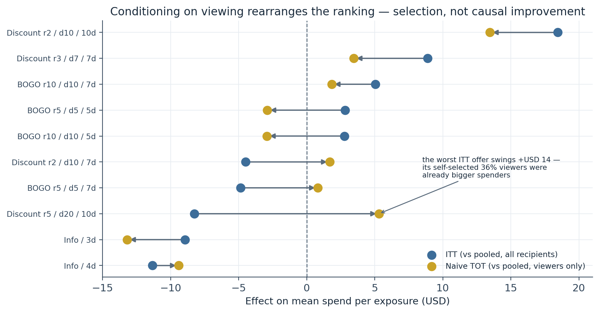
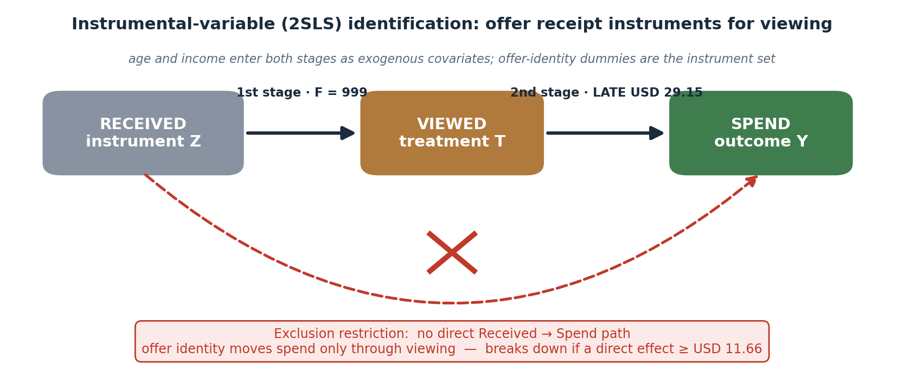
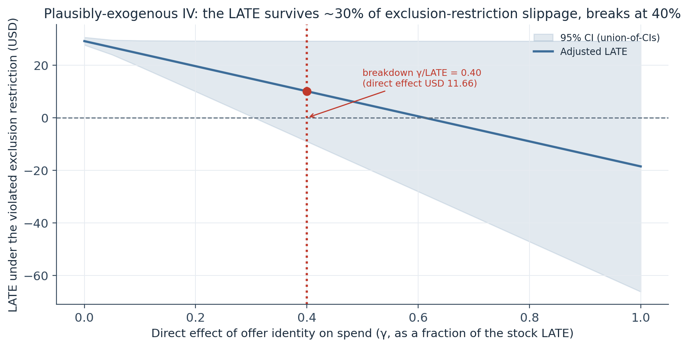
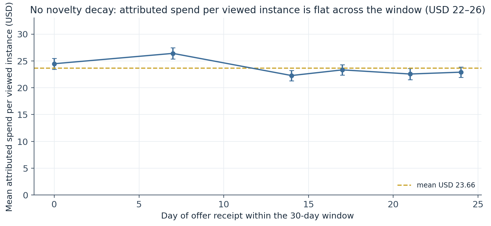

Causal Inference on a Rollout That Was Never Randomised: Per-Offer ITT Contrasts, an IV/2SLS LATE for Viewing, and E-Value / Plausibly-Exogenous Sensitivity Bounds
The Starbucks promotions rollout has no no-offer arm — so the estimands are within-treated differential effects and a compliance-weighted local effect. One discount lifts spend USD 18.44 per exposure (E-value 2.28, the only offer robust to any hidden confounder weaker than 2.28×); the pooled IV LATE for viewing is USD 29.15 but breaks down at 40% exclusion-restriction slippage.
Observational causal inference on a non-randomised 76,277-instance offer rollout, with the identification limits stated at every step. The constraint: every customer received offers, so there is no treatment-vs-untreated contrast; the ITT analysis compares each offer to the pooled rest, and viewing is instrumented by offer identity. Balance: offer receipt is near-random across the catalogue (39 of 40 covariate cells |SMD| < 0.1), but offer viewing is strongly selective (pre-period spend SMD +0.23) — which is why the IV earns its place. ITT: all 28 per-offer contrasts are significant after Benjamini–Hochberg, so the reading is effect-size-first. One discount (reward 2, difficulty 10, 10-day) is top on view rate (96.8%), completion (70.2%), and spend (+USD 18.44 vs pool); one discount (reward 5, difficulty 20) fails on all three. IV/2SLS: the pooled LATE of viewing on spend is USD 29.15 (95% CI [27.68, 30.63], first-stage F = 999). Sensitivity: the top discount’s E-value is 2.28 (strong); the other nine offers sit at 1.31–1.84 (moderate); the LATE’s Conley–Hansen–Rossi breakdown point is a direct effect of USD 11.66 (40% of the stock estimate).
quasi-experimental, intention-to-treat, instrumental variables, two-stage least squares, local average treatment effect, E-value, unmeasured confounding, plausibly exogenous, Conley Hansen Rossi, standardised mean difference, Benjamini-Hochberg, exclusion restriction, Starbucks capstone, Python, statsmodels
Abstract
The Starbucks/Udacity capstone promotions rollout was not a randomised experiment: essentially every customer received offers during the 30-day window, so there is no treatment-versus-untreated contrast to exploit. This study estimates two identifiable quantities instead, with the identification limits stated at each step. The intention-to-treat (ITT) analysis compares each of the 10 offers against the pooled remainder on view rate, completion rate, and mean attributed spend per exposure (unit of analysis: the offer instance, n = 76,277). The local average treatment effect (LATE) of viewing is recovered by instrumenting was_viewed with offer-identity dummies in a two-stage least-squares model. Covariate balance shows that offer receipt is close to random across the catalogue (39 of 40 covariate-by-offer standardised mean differences fall below 0.1), but offer viewing is strongly selective — pre-period spend has a standardised mean difference of +0.23 between viewers and non-viewers — which is precisely why the IV is required. All 28 per-offer ITT contrasts are statistically significant after a Benjamini–Hochberg correction, so interpretation is effect-size-first. One discount (reward USD 2, difficulty USD 10, 10-day) is top on every metric: 96.8% view rate, 70.2% completion, and +USD 18.44 mean spend per exposure versus the pool (95% CI [+16.95, +19.93]); its E-value of 2.28 places it alone in the “strong” robustness band, meaning no unmeasured confounder weaker than a 2.28× risk-ratio association could explain it away. One discount (reward USD 5, difficulty USD 20) fails on all three metrics. The pooled IV LATE of viewing on spend is USD 29.15 (95% CI [27.68, 30.63]; first-stage F = 999), but a Conley–Hansen–Rossi plausibly-exogenous analysis shows the positive-LATE conclusion breaks down once a direct effect of offer identity on spend reaches USD 11.66 — 40% of the stock estimate. The deliverable is a reusable observational-inference stack — pre-registered estimands, balance diagnostics, ITT/IV estimation, and quantified breakdown thresholds — that applies to any rollout where randomisation was not engineered in.
Keywords: quasi-experimental, intention-to-treat, instrumental variables, local average treatment effect, E-value, plausibly exogenous, Conley–Hansen–Rossi, standardised mean difference, exclusion restriction
Introduction
A previous study in this project designed a clean randomised A/B test on a simulated substrate — the reference standard. This is the compromised case. The observed rollout assigned offers to customers with near-uniform volume per offer, but the offers themselves differ systematically in reward, spend threshold, duration, and channel mix, and no randomisation protects against confounding between which customer received which offer and how much that customer would have spent anyway. There is no no-offer arm: only 6 of 17,000 customers received zero offers.
The response is to do everything with the rigour of observational causal inference and to name the estimands precisely. The ITT contrasts recover the effect of receiving a particular offer relative to receiving one of the others — the policy-level “if I send this instead of that, what happens?” — not the effect of an offer versus nothing. The IV LATE recovers the effect of viewing an offer, for the compliers whose viewing decision responds to offer characteristics, under an exclusion restriction that offer identity affects spend only through the funnel. Both are informative for a targeting decision; neither is a clean causal effect against a no-treatment counterfactual, and every causal-language claim here refers to those two estimands.
The identification assumptions behind each estimator are not directly testable, so two sensitivity analyses quantify how far each can be violated before its conclusion overturns: an E-value on the ITT contrasts (threat: unmeasured confounding) and a Conley–Hansen–Rossi plausibly-exogenous analysis on the LATE (threat: exclusion-restriction violation).
Method
Data source and unit of analysis
Three Gold-layer tables from the project’s medallion ETL pipeline (built from the Starbucks / Udacity Data Scientist Nanodegree capstone simulated-offers data, distributed on Kaggle): offer_events_gold (one row per offer instance, n = 76,277), transactions_gold (n = 138,953), and customer_features_gold (n = 17,000). The analysis unit is the offer instance — a customer × offer × received-time triple — because the same customer appears across multiple offers within the window. The primary outcome, instance_spend, is the sum of attributed transaction amounts within the instance’s attribution window (0 when the offer was never viewed, by the attribution rule). Mean instance_spend is USD 17.67 (median USD 2.31, max USD 1,136.78); 66,501 instances (87.2%) carry complete demographics.
Estimands and pre-registration
The estimands, outcomes, guardrail, and decision rule are fixed before any test runs (Table 1). One quantity is explicitly refused in advance: a single pooled catalogue-wide effect. The 10 offers differ too much in reward, threshold, duration, and channel for a pooled effect to carry a coherent business meaning, so effects are estimated per offer against the pooled rest.
Table 1
Pre-Registered Estimands and Decision Rule
| Element | Specification |
|---|---|
| Unit of analysis | Offer instance (customer × offer × received-time), n = 76,277 |
| Primary outcome | Mean attributed spend per exposure (USD), within the attribution window |
| Secondary outcomes | View rate; completion rate among non-informational offers; transaction frequency |
| Guardrail | Total spend per customer over the window (attributed + organic) |
| ITT estimand | Effect of receiving offer A vs the pooled other offers |
| TOT / LATE estimand | Effect of viewing an offer, for compliers (IV) |
| Tests | Two-proportion z (rates), Welch t (spend); Benjamini–Hochberg FDR at 5% across 28 contrasts |
| Decision rule | Positive effect declared only if BH-adjusted p < 0.05 and the guardrail does not move adversely and the arm size supports a meaningful MDE |
| Refused | A single pooled catalogue-wide effect |
Note. Because spend is Pareto-distributed (Gini 0.525), every contrast is reported with a dollar effect size and a 95% interval, and significance language is reserved for the rare interval that crosses zero.
Identification strategy
Covariate balance. Standardised mean differences (Austin, 2011) for age, income, pre-period transaction count, and pre-period spend, computed per offer (each offer vs the pooled rest) and pooled (viewers vs non-viewers). Imbalances above |SMD| = 0.1 are carried as controls.
ITT. Per offer: two-proportion z-tests on view rate and completion rate against the pooled baseline, a Welch t-test on mean instance_spend, and a Benjamini–Hochberg (1995) correction across all 28 tests.
IV / 2SLS. instance_spend regressed on standardised age, standardised income, and was_viewed, with was_viewed instrumented by offer-identity dummy variables (Angrist, Imbens & Rubin, 1996). Offer identity is the one variable the balance table shows is near-random across customers at receipt; the per-offer view-rate spread of 61 percentage points supplies the first-stage variation. The naive as-treated (“viewed vs viewed”) comparison is reported alongside as a biased benchmark.
Sensitivity analyses
E-value (VanderWeele & Ding, 2017) on each ITT spend contrast: the dollar differential is converted to a standardised mean difference against the pooled within-arm spend SD (USD 44.39), mapped to an approximate risk ratio, and expressed as the minimum confounder–exposure and confounder–outcome association strength that would explain the effect away (E ≥ 2.0 = strong robustness; 1.25–2.0 = moderate).
Conley–Hansen–Rossi (2012) plausibly-exogenous bounds on the LATE: the exclusion restriction is progressively relaxed by allowing a direct effect γ of offer identity on spend, and the adjusted LATE and its union-of-CIs interval are traced as γ grows from 0 to the stock LATE. The breakdown point is the smallest γ at which the interval first includes zero.
Software
Python 3.10 with statsmodels (IV2SLS, proportions_ztest, multipletests), scipy, numpy, scikit-learn (LogisticRegression for the IPW balance check), and matplotlib. Deterministic throughout — no random seeds — and reproduces bit-for-bit from the Gold tables.
Results
Exposure and retrospective power
The rollout is volume-balanced: 76,277 instances split across 10 offers between 7,571 and 7,677 each (max-to-min ratio 1.01×), every offer within ±0.7% of the uniform baseline. A χ² test against uniform expectation would fail to reject, but that only confirms the operator was careful about volume — it says nothing about assignment integrity, which is why the offer mix (not volume) is the confounding threat. At ~7,600 instances per arm against a pooled reference of ~68,000, the retrospective minimum detectable effect is ±1.98 percentage points on a rate and ±USD 2.01 on mean spend (Figure 1). Every per-offer differential of business interest exceeds both thresholds several times over — which is why the analysis is effect-size-first and treats the Benjamini–Hochberg correction as family-wide error control rather than a signal filter.
Figure 1
Retrospective Minimum Detectable Effect vs Sample Size per Arm

Note. Two-proportion test around a baseline view rate of 0.746 (left); Welch t around a spend SD of USD 44.39 (right). Both at α = 0.05, 80% power.
Covariate balance
Offer receipt is close to random across the catalogue. Of the 40 covariate-by-offer standardised mean differences, only one exceeds 0.1: the top discount (reward 2, difficulty 10, 10-day) shows an SMD of +0.151 on pre-period transaction count — customers who received it had been marginally more active. Age and income are effectively balanced everywhere (all |SMD| ≤ 0.012). This is what a volume-balanced rollout with near-random assignment conditional on platform exposure looks like.
Offer viewing, conditional on receipt, is a different story (Figure 2). Pooled across the catalogue, viewers differ from non-viewers by +0.23 SMD on pre-period spend and +0.18 on pre-period transaction count — both well past the 0.1 threshold — and lean positive on income (+0.07) and age (+0.05). Engaged, spend-heavy customers view offers at a markedly higher rate, so a naive “viewed vs not-viewed” comparison is contaminated by exactly the traits that predict spend independent of any offer. Inverse-propensity weighting on the four covariates pulls every imbalance back inside 0.1 (pre-period spend +0.23 → +0.07, transactions +0.18 → +0.01), confirming the selection is on observed characteristics — and motivating the IV, which sidesteps it by using offer identity as the instrument.
Figure 2
Pooled Covariate Balance — Viewers vs Non-Viewers, Before and After IPW Adjustment

Note. Viewing is selective on observed pre-period behaviour; IPW restores balance, which is why offer identity (near-random at receipt) is used as the IV instrument.
Intention-to-treat effects
All 28 per-offer contrasts — 10 on view rate, 8 on completion rate, 10 on mean spend — are significant after Benjamini–Hochberg at 5% (Table 2). At these sample sizes that is a fact about power, not about the offers, so the reading is by effect size.
On mean spend (Figure 3). The top discount (reward 2, difficulty 10, 10-day) drives +USD 18.44 per exposure versus the pooled baseline of ~USD 16 (95% CI [+16.95, +19.93]) — nearly USD 10 clear of the next offer. The three high-reward BOGOs sit between +USD 2.78 and +USD 5.04 — statistically separated from zero but substantively small. Below the line: two mid-tier offers near −USD 5, the big-reward discount at −USD 8.26, and the two informational offers at −USD 8.94 and −USD 11.33. The informational offers post the largest negative contrasts because the pooled reference is dominated by reward-bearing offers — an offer with no reward mechanically sits below it, which means attributed spend per exposure is the wrong yardstick for informational inventory, not evidence that it destroys value.
On the funnel rates (Figure 4). The two low-reward, long-duration discounts reach 96–97% of recipients (+24 pp vs baseline); the high-reward, high-threshold discount reaches only 35.6% (−43 pp) — it is effectively hidden from two-thirds of the people who receive it. On completion, the two short-threshold discounts lead at 70.2% and 67.6% (+14 to +17 pp); the 10-day BOGOs and the big-reward discount all under-perform by 8–13 pp. The completion hierarchy is not the reward hierarchy — short-threshold, moderate-reward discounts convert best.
Table 2
Per-Offer ITT Effects vs the Pooled Other Offers (offer instance, n = 76,277)
| Offer | View rate (Δ pp) | Completion rate (Δ pp) | Mean spend Δ (USD) | 95% CI | E-value | Band |
|---|---|---|---|---|---|---|
| Discount r2 / d10 / 10d | 96.8% (+24.7) | 70.2% (+17.2) | +18.44 | [+16.95, +19.93] | 2.28 | strong |
| Discount r3 / d7 / 7d | 96.2% (+24.0) | 67.6% (+14.2) | +8.89 | [+7.78, +10.00] | 1.69 | moderate |
| BOGO r10 / d10 / 7d | 87.7% (+14.6) | 48.2% (−7.9) | +5.04 | [+3.92, +6.16] | 1.46 | moderate |
| BOGO r5 / d5 / 5d | 95.5% (+23.2) | 56.7% (+1.9) | +2.82 | [+1.72, +3.91] | 1.31 | moderate |
| BOGO r10 / d10 / 5d | 95.5% (+23.2) | 43.9% (−12.8) | +2.78 | [+1.65, +3.91] | 1.31 | moderate |
| Discount r2 / d10 / 7d | 54.0% (−22.9) | 52.7% (−2.7) | −4.48 | [−5.47, −3.49] | 1.42 | moderate |
| BOGO r5 / d5 / 7d | 54.4% (−22.4) | 56.7% (+1.9) | −4.85 | [−5.79, −3.91] | 1.44 | moderate |
| Discount r5 / d20 / 10d | 35.6% (−43.3) | 44.9% (−11.7) | −8.26 | [−9.17, −7.35] | 1.65 | moderate |
| Informational / 3d | 80.8% (+6.9) | — | −8.94 | [−9.60, −8.28] | 1.69 | moderate |
| Informational / 4d | 50.0% (−27.3) | — | −11.33 | [−11.99, −10.68] | 1.84 | moderate |
Note. Δ pp = percentage-point difference from the pooled reference. All 28 contrasts significant after Benjamini–Hochberg at 5%. E-value = minimum confounder association (risk-ratio scale) on both arms of the sandwich needed to explain the spend effect away.
Figure 3
Per-Offer ITT Effect on Mean Spend, Graded by E-Value Robustness

Note. Colour = E-value band (green ≥ 2.0 strong; gold 1.25–2.0 moderate). The magnitude of the effect and the magnitude of the robustness scale together.
Figure 4
Per-Offer ITT Effects on View Rate and Completion Rate

Note. Every interval clears the ±1.98 pp retrospective resolution; the completion-rate panel covers non-informational offers only.
Treatment-on-treated and the IV LATE
The naive as-treated comparison (“viewed vs viewed”) rearranges the ranking in ways the causal story does not support (Figure 5). The worst ITT offer — the reward-5 difficulty-20 discount at −USD 8.26 against the ITT pool — appears at +USD 5.32 in the naive-TOT frame, a USD 14 swing. The mechanism is transparent: that offer is viewed by only 35.6% of recipients, and those viewers are a self-selected, higher-engagement subset. A naive within-viewer contrast captures that selection as effect. An offer that reaches few recipients and keeps the engaged self-selectors among them is causally harder to reach, not causally better.
The IV/2SLS estimate is the causally interpretable counterpart (Figure 6). Instrumenting was_viewed with offer-identity dummies, on the 66,501 instances with complete demographics, the pooled LATE of viewing on instance_spend is USD 29.15 (SE USD 0.75; 95% CI [27.68, 30.63]). The first-stage F of 999 is far above the weak-instrument threshold, unsurprising given the 61-point per-offer view-rate spread the dummies exploit. The interpretation is specific: this is the causal effect of viewing, for the compliers whose attention responds to offer characteristics — not a population-average effect, and explicitly not the effect of receiving an offer versus receiving nothing. The LATE is larger than any per-offer ITT contrast because the two estimands answer different questions: ITT contrasts an offer against other reward-bearing offers, LATE contrasts viewing against the attribution-zero no-view state.
Figure 5
How Conditioning on Viewing Rearranges the Per-Offer Ranking

Note. Naive TOT restricts to viewers, whose composition differs by offer; the shifts are selection, not causal improvement.
Figure 6
Instrumental-Variable (2SLS) Identification

Note. The instrument set is the offer-identity dummy variables; age and income are exogenous covariates in both stages.
Sensitivity to the identification assumptions
Unmeasured confounding (E-value). Of the 10 ITT spend contrasts, only the top discount reaches the strong band, at E = 2.28: an unmeasured confounder would need a 2.28× risk-ratio association with both offer receipt and spend to nullify its +USD 18.44 effect — far beyond the strongest measured imbalance (|SMD| = 0.151). The other nine offers sit in the moderate band (E = 1.31–1.84); the two smallest BOGO contrasts (E = 1.31) are fragile, since a confounder only 1.3× stronger than anything measured would suffice. The magnitude of the effect and the magnitude of the robustness move together — the offers whose business decision matters most are the ones best protected against hidden confounding.
Exclusion-restriction violation (Conley–Hansen–Rossi). As a direct effect of offer identity on spend is allowed to grow, the adjusted LATE falls and its interval widens (Table 3, Figure 7). The LATE survives the first ~30% of slippage cleanly; at γ/LATE = 0.40 the interval first includes zero — a direct effect of USD 11.66 per exposure (40% of the stock LATE) would render the positive-LATE conclusion unsupported. Whether 40% is a comfortable margin depends on whether brand-halo, anchor-pricing, or notification-preview effects of offer metadata can plausibly move spend by that magnitude outside the funnel. None is zero a priori. The reading is moderate robustness — a best estimate with a named caveat, not a settled number.
Table 3
Conley–Hansen–Rossi Bounds on the IV LATE Under Exclusion-Restriction Violation
| Direct effect γ (fraction of LATE) | γ (USD) | Adjusted LATE (USD) | 95% CI (USD) | Interval includes 0 |
|---|---|---|---|---|
| 0.0 | 0.00 | 29.15 | [27.68, 30.63] | no |
| 0.2 | 5.83 | 19.62 | [9.98, 29.27] | no |
| 0.3 | 8.75 | 14.86 | [0.49, 29.23] | no |
| 0.4 | 11.66 | 10.09 | [−9.02, 29.21] | yes |
| 0.6 | 17.49 | 0.57 | [−28.06, 29.19] | yes |
| 1.0 | 29.15 | −18.49 | [−66.16, 29.17] | yes |
Note. Abridged from an 11-point grid. Breakdown point in bold.
Figure 7
Plausibly-Exogenous IV: Adjusted LATE and Interval as the Exclusion Restriction Is Relaxed

Note. Union-of-CIs inference. The positive-LATE conclusion is robust to roughly a third of exclusion-restriction slippage, no more.
No novelty decay
Mean attributed spend per viewed instance is flat across the 30-day window — between USD 22 and USD 26 by day of receipt, mean USD 23.66 (Figure 8). Within this observation window there is no evidence of the effect fading; a longer horizon might attenuate the discount lifts and elevate the brand-maintenance value of informational offers, but that is beyond what 30 days can show.
Figure 8
Mean Attributed Spend per Viewed Instance by Day of Offer Receipt

Note. Points shown only for receipt days with at least 20 viewed and 20 non-viewed instances.
Discussion
Principal findings
Under the identification assumptions the sensitivity analyses quantify: (1) one discount — the cheapest reward paired with the longest attribution window — dominates the catalogue on view rate, completion, and spend simultaneously, and it is the only offer whose spend effect is robust (E = 2.28) to any plausible hidden confounder. (2) One discount — the highest reward paired with the highest spend threshold — fails on reach, completion, and spend simultaneously, an interpretable double failure of high threshold and low visibility. (3) The informational offers post the largest negative spend contrasts by construction of the pooled reference; they should be measured on total spend or a reach proxy, not attributed spend per exposure. (4) The pooled LATE of viewing (USD 29.15) dwarfs the per-offer ITT contrasts, consistent with funnel-reach being the binding constraint rather than persuasion — conditional on the exclusion restriction holding approximately.
The ITT-versus-LATE decomposition
The scale gap between the per-offer ITT differentials (single to mid-teens of dollars) and the pooled LATE (USD 29) is not a contradiction. ITT asks “what happens when you send this offer instead of another one” — a contrast against a reference of other reward-bearing offers. LATE asks “what happens when a complier actually sees an offer, regardless of which” — a contrast against the no-view state, which in this attribution scheme is zero. The IV framework separates the effect of the offer mix from the effect of funnel-reaching the customer, and the second is the larger lever if the exclusion restriction is approximately right.
What the sensitivity bounds actually license
A stakeholder should lean more heavily on the ITT findings than on the LATE. The E-value analysis gives a clean argument for the top discount and a directional-but-not-unassailable one for the rest. The LATE’s 40% breakdown point is moderate: enough to report USD 29.15 as a best estimate with the exclusion-restriction caveat attached, not enough to treat it as settled or to build a channel-investment case that does not survive its own sensitivity check.
Limitations
The ITT contrasts are within-treated differential effects, not treatment-versus-untreated effects — a clean counterfactual needs a randomised no-offer holdout. The IV exclusion restriction (offer identity affects spend only through viewing) is plausible but unverifiable; the breakdown point is USD 11.66. The heterogeneity analysis attempted in the source work collapses into an attribution tautology — instance_spend is zero for non-viewed instances by construction, so a “viewed vs not-viewed” lift by subgroup equals mean spend among viewers by definition — and is not reported here; per-customer effect estimation is the subject of the next study. The 2,175 customers without demographics are excluded from the balance and IV work by listwise deletion. And 30 days is a short-run window: these are lifts per exposure, not lifetime-value estimates.
Conclusion and targeting recommendation
Scale the cheapest-reward-longest-duration discount — the one offer where the evidence is unambiguous on every axis and robust to any confounder weaker than 2.28×. Retire the big-reward-big-threshold discount and free the catalogue slot for a randomised test. Reframe the informational offers as brand-maintenance inventory measured on total spend, not attributed spend. Keep BOGOs but do not scale them on the pooled differential alone. Treat the LATE-implied case for investing in notification delivery as conditional on the exclusion restriction, and fund the infrastructure — a pre-period window, a randomised holdout arm, randomised notification variation — that would let the next rollout be analysed as a clean experiment rather than reconstructed as a quasi-experiment.
References
Angrist, J. D., Imbens, G. W., & Rubin, D. B. (1996). Identification of causal effects using instrumental variables. Journal of the American Statistical Association, 91(434), 444–455. https://doi.org/10.1080/01621459.1996.10476902
Austin, P. C. (2011). An introduction to propensity score methods for reducing the effects of confounding in observational studies. Multivariate Behavioral Research, 46(3), 399–424. https://doi.org/10.1080/00273171.2011.568786
Benjamini, Y., & Hochberg, Y. (1995). Controlling the false discovery rate: A practical and powerful approach to multiple testing. Journal of the Royal Statistical Society: Series B, 57(1), 289–300. https://doi.org/10.1111/j.2517-6161.1995.tb02031.x
Conley, T. G., Hansen, C. B., & Rossi, P. E. (2012). Plausibly exogenous. The Review of Economics and Statistics, 94(1), 260–272. https://doi.org/10.1162/REST_a_00139
Rosenbaum, P. R., & Rubin, D. B. (1983). The central role of the propensity score in observational studies for causal effects. Biometrika, 70(1), 41–55. https://doi.org/10.1093/biomet/70.1.41
Seabold, S., & Perktold, J. (2010). statsmodels: Econometric and statistical modeling with Python. Proceedings of the 9th Python in Science Conference, 92–96. https://doi.org/10.25080/Majora-92bf1922-011
VanderWeele, T. J., & Ding, P. (2017). Sensitivity analysis in observational research: Introducing the E-value. Annals of Internal Medicine, 167(4), 268–274. https://doi.org/10.7326/M16-2607
Welch, B. L. (1947). The generalization of “Student’s” problem when several different population variances are involved. Biometrika, 34(1–2), 28–35. https://doi.org/10.1093/biomet/34.1-2.28
Starbucks, & Udacity. (2018). Starbucks Capstone Challenge simulated offers dataset [Data set]. Retrieved from Kaggle (I. Muliar, mirror). https://www.kaggle.com/datasets/ihormuliar/starbucks-customer-data
Quasi-experimental study on a non-randomised rollout. The ITT contrasts recover within-treated differential effects, not treatment-versus-untreated effects; the IV LATE rests on an exclusion restriction that cannot be verified from this data and whose breakdown point is USD 11.66 per exposure. Every figure and number was regenerated from the Gold tables by a deterministic pipeline.